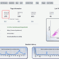

Petre Dalea e unul dintre cititorii care ne mai onorează din când în când cu câte un comentariu pe ACRU.ro. Are un blog pe care se prezintă ca fiind un “bănăţean mai mult bătrân decât tânăr şi mai mult gras decât slab”, pasionat de tir sportiv, politică şi câini. Acolo, domnul Dalea a iniţiat ceea ce descrie ca fiind un “concurs cu premii” în care participanţii ar trebui să-i evalueze produsul, adică site-ul www.d-petre.ro – Bombăneală blogosferică – şi să scrie un articol despre rezultatul analizei.
Petre Dalea e unul dintre cititorii care ne mai onorează din când în când cu câte un comentariu pe ACRU.ro. Are un blog pe care se prezintă ca fiind un “bănăţean mai mult bătrân decât tânăr şi mai mult gras decât slab”, pasionat de tir sportiv, politică şi câini. Acolo, domnul Dalea a iniţiat ceea ce descrie ca fiind un “concurs cu premii” în care participanţii ar trebui să-i evalueze produsul, adică site-ul www.d-petre.ro – Bombăneală blogosferică – şi să scrie un articol despre rezultatul analizei.
Competiţia şi răsplata pusă în joc nu ne tentează câtuşi de puţin, dar ideea de a-i masacra omului munca la cerere ni se pare fascinantă, mai ales că proiectul online al reşiţeanului hâtru împlineşte doi ani de la lansare pe 24 iulie 2013. Prilej cu care îi dorim viaţă rentabilă!
Aşadar, vom organiza carnagiul sub forma unei sumare analize SWOT. Gratis, fără pretenţii la vreun premiu, din simpatie şi drept mulţumire pentru comentarii.
SPuncte tari. Ce merge bine la blogul lui Petre Dalea
- Blogul e scris într-o limba română curată, cratimele sunt la locul lor, la fel şi diacriticele. Am căutat termenii “focusare, targetare, trendy” şi, Slavă Domnului, n-am găsit niciunul dintre ei! Semn că Petre Dalea scrie în română, nu în romgleza de fiţe. Îi mai scapă câte un “zapping blogosferic”, dar nimeni nu-i chiar imun la asaltul barbarismelor;
- Grafica temei London Live (versiunea 1.3) e elegantă. Cele două embleme sunt simpatice şi reprezentative. În plus, siglele conţin nuanţe derivate din culorile de bază ale site-ului: alb şi negru. Deşi cam mici, caracterele de bază folosite pentru texte sunt lizibile;
- Nu există breşe majore de securitate. Cea mai recentă versiune de WordPress (3.5.2) e instalată;
- Trafic decent, peste 4500 de vizitatori unici pe lună. Mai mulţi cititori fideli au instalată extensia Alexa, astfel că blogul apare pe un încurajator loc 1760 în topul Alexa.com pentru România;
- Prezenţă în social media. Conturile de Facebook, Google Plus, Twitter, Youtube şi Pinterest ale lui Petre Dalea există şi sunt accesibile din prima pagină a blogului;
- Site-ul are versiune pentru mobil;
- D-Petre.ro are sitemap general. Totuşi, lipseşte “harta” dedicată imaginilor şi cea pentru videoclipuri;
- 275 de domenii web trimit către www.d-petre.com peste 90.000 de legături! După cum vedem în aceste grafice, Petre stă excelent la numărul de backlink-uri active.
- Raportul dintre text şi cod html e rezonabil, peste 15% pe prima pagină;
- Majoritatea link-urilor “buşite” (broken links) provin din comentarii. Sunt 161 în total, adică mult sub 1 pe pagină, în medie.
- Titluri bune, scurte, la obiect. Textele sunt aerisite, coerente, paragrafele au dimensiuni medii.
WPuncte slabe. Ce ar trebui corectat la d-petre.ro
- Google Page Rank egal cu zero (din 10 teoretic posibil, maxim 5 realizabil). Domeniul web a fost drastic penalizat de algoritmii Google în decursul anului 2012 şi de atunci nu şi-a mai revenit. Asta se traduce printr-o prezenţă discretă în paginile motoarelor de căutare, dar poate reprezenta şi un firav avantaj: lipsa vizitatorilor accidentali, adică rată de respingere (bounce rate) mică;
- În ciuda faptului că se bazează pe versiunea mai puţin pretenţioasă a limbajului XHTML (1.0 Transitional), tema scuipă aşa ceva. Numai pagina principală produce 51 de erori de validare, deşi standardul e mai relaxat decât în cazul XHTML 1.0 Strict. Despre diferenţele dintre cele două standarde menţionate, puteţi citi aici.
-
Viteza de încărcare nu străluceşte (3 secunde la testul efectuat de pe un server european), iar prima pagină e uriaşă, are 1,6 MB! De vină pare a fi (inclusiv) absenţa optimizării imaginilor;
- Aparent, nu există posibilitatea de a te primi fluxul de noutăţi prin e-mail (abonament newsletter);
- Doar 333 dintre cele 473 de articole publicate sunt indexate de principalul motor de căutare la data prezentei analize. Adică rată de indexare a conţinutului de 70%. În ceea ce priveşte Bing, situaţia e şi mai rea. Doar 155 de pagini prezente (33%);
- Eficienţă scăzută în social media. Pagina oficială de Facebook a site-ului d-petre.ro are sub 250 de like-uri. Sunt puţine, dar sunt oneste: fără indonezieni, pakistanezi şi indieni cumpăraţi cu ridicata;
- Navigarea între pagini e dificilă. Nu există un meniu dedicat. Singura variantă de a ajunge, de exemplu, la ultima pagină e să dai click pe butonul “articole mai vechi” de 47 de ori! Sau să scrii direct în bara de adrese numărul paginii pe care o cauţi, presupunând că ai intui corect câte pagini cu articole a scris Petre Dalea;
- Pagina personalizată de “eroare 404″ (conţinutul nu a fost găsit) e atât de hotărâtă să-şi facă treaba încât conţine o…eroare în sine! E cel mai amuzant punct slab detectat. Probabil că aici ar fi trebuit să se afle o poză, dar s-a rătăcit pe drum şi nu se mai arată.
Ups, eroare!
OOportunităţi. Ce potenţial are site-ul www.d-petre.ro
- Site-ul are loc să crească din punct de vedere tehnic. Printr-o serie de măsuri inteligente, poate deveni mult mai “sprinţar” şi mai uşor de găsit. Chiar şi în starea actuală, depăşeşte o bună parte din concurenţa directă;
- O treime dintre cititorii lui Petre Dalea provin din Reşiţa. Nişa locală poate fi exploatată cu uşurinţă. De ce n-ar scrie Petre Dalea mai mult despre politicienii din judeţul Caraş-Severin, despre performanţa, legăturile sau afacerile lor cu statul?! De exemplu, despre Valeria Schelean. De n-ar transforma bombănelile în opinii de temut pentru tartorii regiunii?;
- Domeniul armelor cu aer comprimat e încă un subiect unde autorul blogului ar putea specula golul de informaţie existent.
TAmeninţări. De ce ne-am teme în locul lui Petre Dalea
- Uneori, Google e mai ranchiunos decât Traian Băsescu. Cum cauza penalizării nu pare a fi fost detectată şi eliminată, blogul mucalitului bănăţean ar putea rămâne practic inexistent în SERP;
- Piaţa e saturată de opinii despre telefoane mobile şi câini. Deşi pozele cu Rocco pot smulge câte un suspin admirativ de la doamne şi domnişoare sensibile, mai mult de un comentariu de tip “ce drăguuuţ, e cel mai dulce căţeluş” nu iese. Nici măcar de un share pe Facebook. Nu de aici poate veni creşterea;
- www.d-petre.ro împarte IP-ul 89.46.6.170 cu încă 21 de domenii, printre care ceasuridama.net, lenjeriidepat.org, plicuricubule.ro [sic!] şi alte trăsnăi asemănătoare. Aceste alăturări n-au cum să facă bine din punct de vedere al strategiei SEO, mai ales că nu există niciun control asupra calităţii conţinutului site-urilor cu IP identic;
Acestea sunt principalele repere la care ne-am gândit după o evaluare sumară, din exterior. Analize calitative ale conţinutului şi performanţelor site-urilor web făcute ca la carte găsiţi aici.


{kind=link}
{kind=link}
{kind=link}
{kind=link}
{kind=link}
Cu putin zahar aceasta analiza nu mai pare asa de acra si devine asa ca iti multumesc pentru ea.
asa ca iti multumesc pentru ea.
digerabila
Sorin Oprescu a zis o singură chestie remarcabilă în ultimii ani: de când fenicienii au inventat moneda, mulţumirile sunt de prisos! Are dreptate.
@D-Petre, replica de mai sus nu se aplică cazului de faţă, doar am zis că-i gratis, cu plăcere. Acrul face bine digestiei, taie greaţa dulcegăriilor ipocrite
E aiurea sa sa iti imparti hostingul, dar uneori nu ai ce face. In momentul achizitionarii pachetului nu ai stiut ce inseamna si ai ajuns aici. Sper ca eu anul viitor sa scap de aceasta problema.
@cotos(3), există oferte de hosting shared cu IP public dedicat. E drept, costă un pic mai mult. În anumite cazuri, s-ar putea să merite.
Comments on this entry are closed.